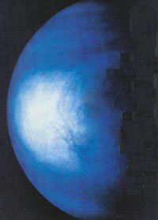
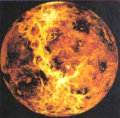
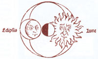
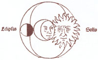
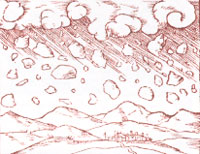

Nineteen ninety-three offers extraordinary sights for watchers of the heavens. The United States gets treated to a rare trio of total lunar eclipses-each one likely to provide strange effects due to the Earth-shrouding haze produced by Mt. Pinatubo's 1991 eruption in the Philippines. Prospects range from good to excellent for observing the major annual meteor-showers as well as numerous pairings and groupings of Moon, planets, and stars. This year brings a partial eclipse of the Sun to some parts of the country and some of the best planet appearances for years to come to the whole world.
A lunar eclipse is when the Sun, Earth, and Moon are in a straight line and the Earth's shadow falls on the Moon. In a total eclipse, the Moon passes completely into the Earth's umbra, or shadow, so that the Sun can't be seen from the Moon at all. In a partial eclipse, only part of the Earth's umbra falls across the Moon, and the Sun is partially visible from some places on the Moon. The third type, a penumbra eclipse, is when only the Earth's penumbra (partial shadow) shades the Moon and one's view of the Sun is only partially blocked by the Earth. (This type of eclipse is particularly difficult to detect from the Earth.)
A solar eclipse, on the other hand, is when the Moon passes between the Earth and Sun. In a total eclipse, the Moon covers the Sun completely and for a few minutes, the sky turns dark. In a partial eclipse, the Moon covers only a portion of the Sun; and in an annular (ring-shaped) eclipse, the Moon is too far from the Earth to cover the Sun completely so that a ring of light surrounds the Moon.
Considering the fact that the Earth can go without a total lunar eclipse for several years (even a decade in some locations), it is remarkable that the entire country will get a chance to see at least one of three total lunar-eclipses in a 12-month period, and possibly even a partial solar eclipse. Here's what you should look for:
December 9, 1992. This first eclipse begins just after nightfall, low in the eastern sky along the East Coast. The farther west you go, the farther advanced the eclipse will be by the time the Moon comes up, around sunset. West Coast watchers will catch only the last part of the Moon sliding out of the Earth's central shadow. During the eclipse, the Moon will pass through the northern part of the umbra-the part most likely to be most darkened by the sulfuric-acid haze of Mt. Pinatubo. Normally, our atmosphere bends a lot of light around the Earth, resulting in a cheerful orange or pink color for the totally eclipsed Moon. However, this may be one of those rare times when Earth's shadow is so dark that the Moon seems to disappear completely.
June 4,1993. If you've already seen (or missed) the December eclipse by the time you read this, fear not-there are more in store. The western half of the United States is treated on June 4th to one of the longest total lunar-eclipses of the century: over an hour and a half. While the central eclipse is likely to be dark, there is a better chance that at least part of the Moon will display dramatic color-perhaps an eerie, ruby red-during some stages at the end of the night. Much depends on how slowly the cloud of volcanic haze dissipates.
November 29, 1993. The final eclipse in our lunar trio is shorter, but the entire country will get a chance to see it during the midnight sky. On November 29, the Moon will pass again through the northern part of Earth's shadow, but this eclipse may be spectacularly brighter than the previous two. After all, it will have been almost 2½ years since the eruption, and our atmosphere ought to be clearing at last.
May 21,1993. If you live well north or west of a line running from roughly El Paso to Cleveland, you might see a different type of eclipse: a small partial eclipse of the Sun. The best American views will be from California to Washington and in Alaska-places where you can look directly at the Sun for a little while at Sunrise and see a "bite" taken out of it that morning. Be careful, though: The Sun may rise above the horizon haze and thicker air quickly. Don't risk your eyesight.
What we call "falling stars" are actually meteors.
To safely view a solar eclipse, put shade #14 welder's glass (available for a few dollars at local welding-supply stores) between your eyes and the Sun. Don't try the welder's glass with binoculars or a telescope, and don't try other filters, which do not block out enough of the dangerous, ultra-violet light.
Projection is another special safety method for viewing the sun. Stand with your back towards the sun and let binoculars or a small telescope project their images of the Sun on to a cardboard screen in front of you. You can tell when binoculars or telescopes are pointed at the Sun (without looking through them) by moving them until they make the smallest possible shadow. It is best to try projection for the first time with the help of an experienced observer.
Meteors, best known as "shooting stars" or "falling stars," are actually bits of space rock or iron which enter our atmosphere at such great speeds-some in excess of 100,000 mph!-that they burn up from friction with the air in a fraction of a second. Often named after constellations, meteor showers are a group of meteors which appear to shoot out from one point, a radiant, in some constellation. These showers occur every year on the dates when Earth crosses the orbit of an old comet, along which these rocky, little bits of debris are scattered. Meteors can only be seen in large numbers when they are observed far from bright moonlight and city light-pollution. Here is what you can expect from 1993's upcoming showers:
January 3 and 4. The Quadrantids may be glimpsed after moonset in the last few hours of these two nights. Some years, U.S. observers catch the brief peak of this intense shower. Even if this isn't one of those years, you might see quite a few "Quads" shooting out of the northeast during these mornings.
April 22. The Lyrids peak around April 22, which in 1993 is around New Moon, so moonlight will not hamper observations. Watch for at least five to 10 "shooting stars" an hour from high in the sky at around midnight for several nights.
May 1-3. A few of the Eta Aquarids might be spotted zooming out of the southeast just before dawn during these days. In 1993, the Full Moon spoils the peak of the May 5th shower.
End of July. The Delta Aquarids must be observed in the last hours of the night to avoid bright moonlight this year. In clear country skies, you can see several dozen Delta Aquarids an hour gliding out of the south.
August 11-12. The Perseids are sometimes the year's strongest meteor shower. In recent years, brief outbursts of several hundred Perseids per hour have been witnessed by lucky observers. With any luck, country observers might see quite a few dozen Perseids per hour zip out of the north and northeast at peak, long after midnight.
October 20-21. The Orionids, which are rubble from Haley's Comet, are best viewed zooming out of the south in the last few hours before dawn on these dates. Many of the Orionids are faint or dark, so clear skies are essential for seeing a maximum of about five to 10 an hour.
November 5-10. The Taurids are few but often very bright. Look for them from the Southeast in the latter part of the evening.
November 16-17. The Leonids are known for producing the most stupendous meteor displays at intervals of about 33 years. The next great views should come in 1998 and 1999, but there may already be an increase from the normal five to 10 an hour this year. The Moon is completely out of the way for the 1993 Leonid's prime hours, which should be those just before morning twilight. These swift meteors fly out of Leo, high in the south at the peak time.
December 13-14. The Geminids sometimes surpass the Perseids as best shower of the year. In 1992, both were compromised by brilliant moonlight. The 1993 Geminids occur during New Moon and therefore are no problem to viewers. Up to 60 or more Geminids an hour may be spotted coming from high in country skies by late evening and onward through most of the night. Look for many bright, colorful Geminids.
Mercury is the innermost planet and therefore seldom appears far enough from the Sun in our sky to see easily. Only for a week or two around its times of greatest elongation (largest apparent separation from the Sun) does it set more than an hour after sundown or rise more than an hour before sunup. In 1993, its most favorable evening elogations for the United States are those of February 21 and June 17; its most favorable morning elongations are those of August 4 and November 22. At such times, this planet looks like a fairly bright star low in the west after nightfall or low in the east before daybreak.
Venus outshines all other points of light in the heavens. It can be seen for as long as three to four hours after sunset at some of its greatest elongations, and equally long before sunrise at some of its others. In 1993, Venus reaches greatest eastern elongation on January 19; it will shine high in the west at nightfall. On Febrary 24, Venus will attain greatest brilliancy the very day it forms a spectacular pairing with the crescent Moon at dusk. In March, Venus starts making its most striking exit from the evening sky in eight years. As the planet nears us in March, a telescope or even steadily held binoculars reveal that it displays a phase, an ever taller but ever skinnier crescent.
Saturn appears as a bright star to the naked eye, but in telescopes shows the famous rings which make it one of the heaven's greatest sights. Just a few weeks into 1993, Saturn is lost from view in evening twilight well below Venus. By late March, however, early risers can see this golden-yellow point of light edging into Aquarius. Look for it in the southeast sky as morning twilight begins. All summer, Saturn rises earlier in the evening until August 19, when it reaches opposition and comes up at sundown. After nightfall it easily outshines all other points of light in the southeastern sky at that time. In October, the rings are the most tilted they will be until 1998. Even at year"s end, Saturn is still plainly visible, though beginning to get rather low in the southwest soon after nightfall.
Jupiter, the largest of planets, is second in brightness only to Venus. As the year begins, Jupiter is rising in the late evening. The planet is closest and brightest at opposition, which it reaches on March 30. A small telescope shows Jupiter's four brightest moons (looking like little stars that change their positions each night) and perhaps several dark cloud bands.
If we don't do something soon, not one child in 10 will see a starry sky.
Uranus and Neptune are together in 1993, having their first conjunction since before the latter was discovered in the middle of the 19th century. These slow distant giants are dim, so at least binoculars are called for to get a view of them together. It takes a fairly large amateur telescope to magnify them well enough to show their globes properly. In order to distinguish them at lower magnifications from any of the surrounding starts, you need detailed finder charts, such as those printed in January's issues of Sky & Telescope and Astronomy (available on newsstands). July is when Uranus and Neptune are slightly brighter and bigger, which is when they reach opposition; the best of their conjunctions with each other are in the latter half of September. Both of these planets are blue-green and about four times wider than Earth, but Uranus is almost two billion miles away from us and the sun; Neptune is almost three billion miles away. After this year, they will have no more conjunctions together until the middle of the 22nd century.
Pluto is on the innermost part of its odd orbit, and so is actually closer to us and the Sun than Neptune is-until 1999. But Pluto is distant enough and because it is also small-smaller than the Earth's Moon!-its light is dim and requires a fairly large amateur telescope to detect.
Mars is closest to Earth on January 3, and is at "opposition" (opposite the Sun in our sky, thus visible all night long) on January 7. Mars' golden-orange color makes it all the more distinctive as it goes high across the south sky this January. Mars is the most Earth-like of planets known, but it is also stunningly different with its two moons, pink skies, and blue sunsets. This September, the U.S.'s Mars Observer spacecraft should go into orbit around "the Red Planet" and send us back the first close-up images of Mars since the Viking spaceraft of the '70s.
A 1988 scientific study estimates that the United States is wasting at least a billion and a half dollars a year on light that goes uselessly off to space. This excessive or misdirected outdoor lighting is known as "Light Pollution." The problem is not just financial; glare from improperly shielded lights shines in the eyes of motorists and residents, often reducing traffic safety and crime prevention. The "sky glow" from today's more wasteful cities blots out our view of the stars for dozens of miles. If we don't do something soon, not one child in 10 being born in America will ever see a starry sky.
Fortunately, politicians and the general public respond to the idea of saving money and energy, improving nighttime driving conditions, and increasing safety against crime. Tucson, Arizona has eliminated half of the light pollution it would otherwise have by using "full-cutoff shielding" (shielding on lights which prevents illumination from escaping above the horizon). Other cities, such as San Diego, Long Beach, and San Jose in California have made modest changes in their outdoor lighting which saves millions of dollars a year. Every county and almost every city in Arizona now have some kind of anti-light-pollution law-all of which passed unanimously.
Redu-cing light pollution may not seem as important as reducing air pollution or global warming, but the prime cause of these greater problems is our tremendous need for energy and the resultant burning of fossil fuels. The 1988 study mentioned above found that the light that goes off uselessly into space from the United States each year is the energy equivalent of tens of millions of barrels of oil-more than the entire energy consumption of most countries in the world! The study also found that about ¾ of this waste could be eliminated by using technology and practices that we already have.
You can help. For one thing, if you have a whitish, mercury vapor yard-light, replace it. These lights waste over half of their energy-producing, ultraviolet light, which you can't even see. They're also so poorly shielded that they waste still more light. Meanwhile, the light puts so much glare in your eyes that you can't even see intruders. (These vapor lights have actually been outlawed in Tucson.) One good alternative- assuming you feel the need to have a security light-is to use properly mounted and directed floodlights hooked up to an infra-red motion sensor. When the sensor is activated, the motion of any person in your yard will turn the lights on. Therefore, you'll save yourself lots of money-roughly a month's worth of electric off of a small household's yearly bill. More importantly, you'll help protect the night sky.
For more information on anti-light-pollution ordinances around the country and to find out what you can do to help, write to: International Dark-sky Association (IDA), 3545 N. Stewart, Tucson, AZ 85716.
Editor's note: Fred Schaaf is a contributing editor at the Old Farmer's Almanac and the author of six books, including his latest, Seeing the Deep Sky (John Wiley & Sons; 1992) He has also written a weekly astronomy column for The Press , an Atlantic City newspaper, for more than 16 years.
|
 PHOTOS ? NASA/PHOTO RESEARCHERS |
 |
 |
|
 |
 |
|